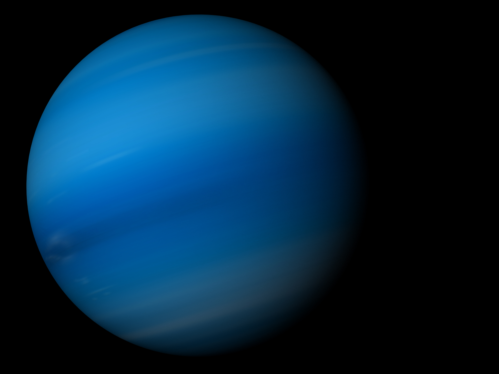

Neptune
Neptune is the eighth and last known planet from the sun. It is similar to Uranus in that it is made up of mostly ice instead of gas. Neptune's atmosphere consists of dense water, liquid ammonia, and methane. Its outer layer is made up of water, hydrogen, helium, and methane which gives Uranus its blue color. Similar to Jupiter's Great Red Spot, Neptune has severe blue colored storms, called Great Dark Spots. Neptune is beleived to be home to some of the fastest wind speeds in the solar system. Wind speeds near the dark blue storms reach upwards of 1,200 miles (2,000 kilometers) per hour.